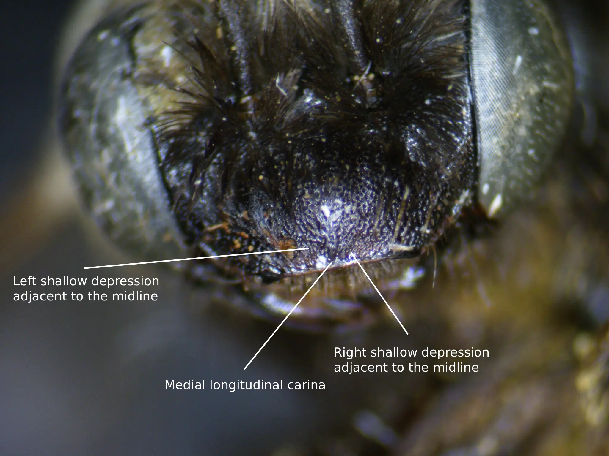
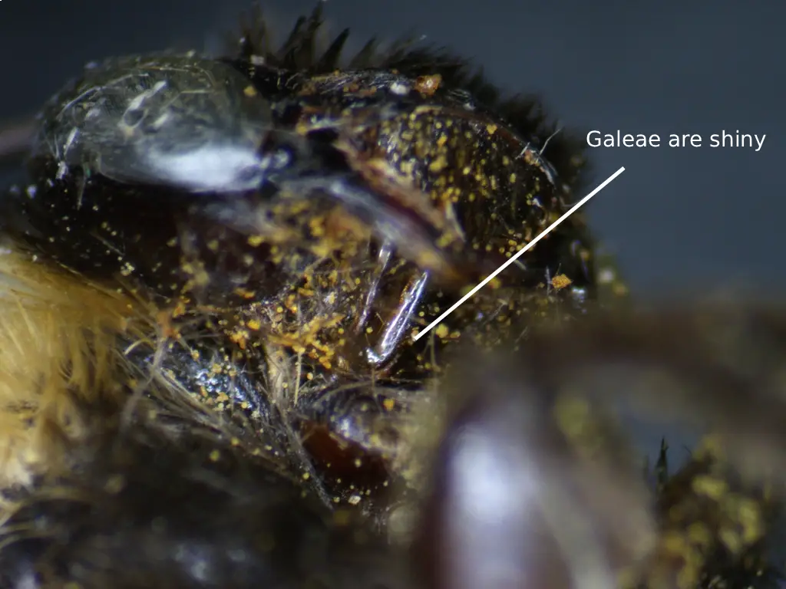
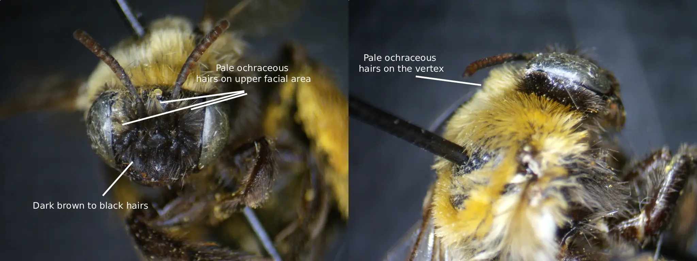
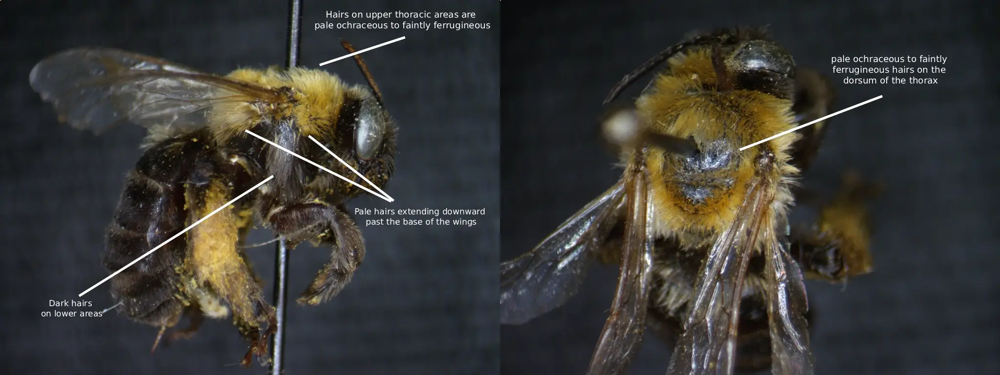
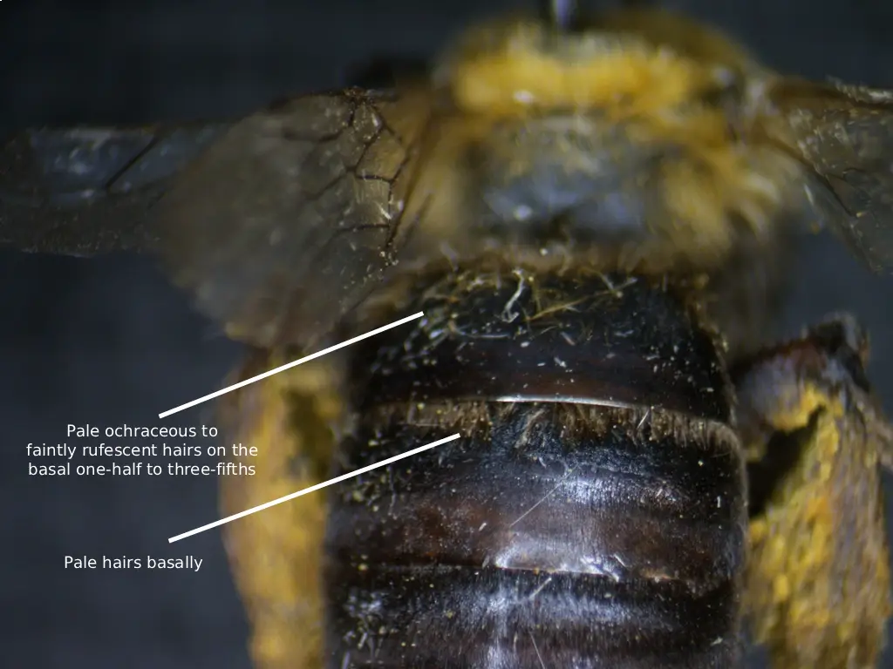
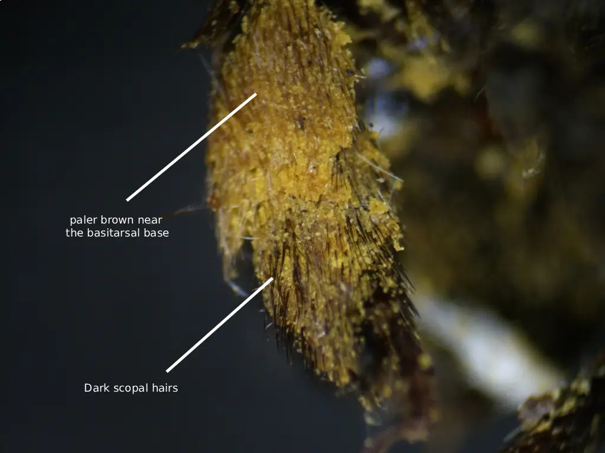

Melissodes bicoloratus Laberge is a somewhat uncommon species of Nearctic bee native to, and occurring in,
the Southwestern United States (Laberge, 1961), and possibly portions of Mexico (GBIF, Secretariat 2023). Like all Melissodes, male
M. bicoloratus have long antennae, and the females have short antennae in comparison (see "Genus" page for more information). This
species resides in the subgenus M. (Eumelissodes) Laberge. Both sexes of M. bicoloratus are somewhat distinct from other M. (Eumelissodes)
Laberge, but females bear a striking resemblance to M. nigracauda and darker forms of M. bimatris. Females can be distinguished from
the former by the shiny unshagreened galeae and can be distinguished from the latter
by the dark scopal hairs (Laberge, 1961). Males somewhat resemble M. bimatris and M. agilis, but can be distinguished from the former by
the lacking of the apical band on the first tergum, the lack of a crenulated flagellum, and pale wing veins. Males can be distinguished
from the latter by the dark mandibular bases and dark labrum (see “Description and Identification” for more information on both sexes)
(Laberge, 1961). M. bicoloratus currently has only four flower records, two of which are from the family Asteracea (Laberge, 1961; McElrath, 2023a),
one of which is from the family Plantaginaceae (Laberge, 1961), and the remaining one is from the family Fabaceae (McElrath, 2023b; see
“Flower records” below) Although it’s interesting how many families of flowers M. bicoloratus has been collected on, there isn’t enough
available data to construct a definitive statement pertaining to the flower preferences and/or oligolecty of this species.
Description and Identification
Based on Laberge's (1961) description, Melissodes bicoloratus are medium sized setacouse bees. Females range from 10 to 13 millimeters
in length and 3.5 to 4.5 millimeters in width (width measured at the widest portion of the metasoma). Males are a bit smaller, being
about 11 millimeters in length and 3.5 millimeters in width (width measured at the widest portion of the metasoma). The female's first
flagellar segment is on average 1.96 times the size of the second flagellar segment (standard deviation 0.024). The males are the
opposite where the second flagellar segment is on average 7.30 times the size of the first flagellar segment (standard deviation 0.531).
Female wing length is 3.55 millimeters on average (standard deviation 0.096 millimeters), and male wing length is 3.53 millimeters
on average (standard deviation 0.211 millimeters). Females have an average of 14.50 hamuli (standard deviation 0.212; ranging between
14 and 15), while males have an average of 12.86 (standard deviation 0.509; ranging between 12 and 14).
Female
According to Laberge (1961), the description of female M. bicoloratus is as follows: the integument is black, differing at the eyes, which are
greenish gray to dark gray; the wing membranes, which are faintly milky; the wing veins, which are red to reddish brown; the apical half of the
mandibles, which are rufescent; the distitarsus (likely referring to all), which are usually rufescent; the underside of flagellar segments 3-10,
which are rufescent; the tegulae, which are piceous; the tibial spurs, which are yellow; and the apical portion the the first tergum, which is
piceous. The clypeus is rather flat, and usually has a medial longitudinal carina (Fig. 1). The oculoclypeal distance is less than or equal to half the
first flagellar segment’s diameter. The clypeus is somewhat dull due to reticular coarse shagreening (including the bottom of the punctures)
and has shallow, round, coarse punctures that are mostly separated by less than one-half of a puncture diameter. The flattened lateral areas
of the vertex are shiny and have irregularly sized small punctures that are mostly separated by one-half to two puncture diameters. The width
of the second flagellar segments is moderately wider apically than its median length ventrally. The four maxillary palpal segments decrease in
length from basal to apical in a ratio of about 4.0:3.0:3.5:1.0. The galeae are shiny with no shagreening dorsally excluding some faint delicate
shagreening in less than, or equal to, the apical half (Fig. 2). The mesoscutum is shiny and sparsely or not at all shagreened and has deep large punctures
that vary in diameter and are mostly separated by one-half to one puncture diameter. The large posteromedian area of the mesoscutum isn’t shagreened,
has punctures that tend to be slightly larger and sparser than the rest of the mesoscutum, and these punctures are separated by at least one and
usually by more than two puncture diameters. Punctures of the scutellum are similar to the punctures on the mesoscutum, but they are slightly more
crowded. The metanotum is dulled by very fine reticular shagreening, and has punctures that are half the diameter of the punctures on the scutellum.
These punctures are mostly separated by one-half to one puncture diameter. The propodeum’s dorsal surface is reticulorugose and is especially coarse
basally, and the posterior surface has coarse punctures except for the upper triangle. The lateral surfaces of the propodeum are similar to the
posterior surface but the punctures are more crowded and the surfaces are dulled by dense regular tessellation. The mesepisternum’s lateral surface
has punctures that are large, shallow, and separated mostly by half a puncture diameter or less. The surface of the mesepisternum is shiny with
weak, incredibly sparse, delicate shagreening.
The first tergum’s basal three-fifths or slightly less is dulled by fine tessellation and medially punctate (less punctate than that
of M. bimatris). These punctures are round, shallow, and separated mostly by one-half to one and one-half puncture diameters; punctures
do not extend to the apex at extreme sides. The apical area of the first tergum is impunctate with a shiny surface that is extremely finely
reticulotransversely shagreened; this apical area extends anterolaterally to form small rounded projections on each side of the tergum. The
second tergum’s basal zone is shiny but has fine reticular shagreening and tiny round punctures that are separated by one to half a puncture
diameter. The interband zone of the second tergum is dulled by reticulotransverse shagreening and has minute irregular sparse punctures. The
apical area of the second tergum is moderately shiny, but dulled with fine reticulotransverse shagreening and has minute distinct punctures
located at minimum near the distal bands and usually they reach the apical margin laterally. The third tergum is similar to that of the second,
but the punctures of the interband zone are relatively more distinct and abundant and the punctures of the apical zone usually reach the apex
across the entire tergum. The fourth tergum is similar to that of the third, but the apical area is usually impunctate, or if punctate, then
it has minute punctures that are no wider than the base of the hairs that arise from them that are separated by two to four puncture diameters.
The pygidial plate is broadly V-shaped with a rounded apex and is about two-tenths longer medially than the width of its base.
M. bicoloratus has a somewhat small range of setal variation, the most common description of which follows. The head hairs are dark brown, differing
at the long vertex hair, the upper areas of the face, and the areas around the antennal fossae, which are usually pale ochraceous (Fig. 3). The upper thoracic
hairs are ochraceous to faintly ferrugineous, this includes the upper portions of the mesepisterna right below the bases of the wings and the dorsal
as well as the posterior propodeal area (Fig. 4). However, most of the lateral and ventral thoracic hairs are dark brown to black. The metasomal hairs are
mostly dark brown to black except for the first tergum, which has pale ochraceous to faintly rufescent hairs on the basal one-half to three-fifths,
and the second tergum, which usually has ochraceous to pale brown basal hairs (these hairs can be dark; Fig. 5). The legs have dark brown hairs except for
the medial hairs of the scopa on the hind tibiae and sometimes near the basitarsal base, which are usually paler brown to ochraceous (Fig. 6).
Photo credit: Photo credit: Christopher Wilson (All Rights Reserved).
Fig. 1. A labeled diagram showing the longitudinal carina of the clypeus of a female M. bicoloratus. Photo credit: Christopher Wilson (All Rights Reserved).
Photo credit: Photo credits: Christopher Wilson (All Rights Reserved).
Fig. 2. A comparison of the galeae sculpturing of a femal M. bicoloratus (left), and a female M. agilis (right), illustrating the shiny nature of the galeae of the female M. bicoloratus. Photo credits: Christopher Wilson (All Rights Reserved).
Photo credit: Photo credits: Christopher Wilson (All Rights Reserved).
Fig. 3. A labeled diagram showing the coloration of the head hairs of a female M. bicoloratus. Photo credits: Christopher Wilson (All Rights Reserved).
Photo credit: Photo credits: Christopher Wilson (All Rights Reserved). Figure Gallery ➜')">
Fig. 4. A labeled diagram showing the coloration of the thoracic hairs of a female M. bicoloratus. Photo credits: Christopher Wilson (All Rights Reserved).
Photo credit: Photo credits: Christopher Wilson (All Rights Reserved). Figure Gallery ➜')">
Fig. 5. A labeled diagram showing the coloration of the metasomal hairs of a female M. bicoloratus. Photo credits: Christopher Wilson (All Rights Reserved).
Photo credit: Photo credits: Christopher Wilson (All Rights Reserved). Figure Gallery ➜')">
Fig. 6. A labeled diagram showing the coloration of the leg and scopal hairs of a female M. bicoloratus. Photo credits: Christopher Wilson (All Rights Reserved).
Male
According to Laberge (1961), the description of male M. bicoloratus is as follows: the integument is black, differing at the eyes, which are greenish gray;
the clypeus, which is yellow except for the usually piceous apical margin; the labrum, which is completely black; the wing membranes, which are hyaline and
faintly milky; the wing veins, which are reddish yellow to yellow; flagellar segments 2-11 which are red to yellow on the underside and dark red to brown on
top (F1 dark); the distitarsi, which are rufescent; the tegulae, which are piceous; and the apices of the terga, which are colorless hyaline. The clypeus protrudes
beyond the eye by about half the width of an eye in profile view. The first flagellar segment’s minimum length is about two-thirds of its maximum length,
and about one-sixth the maximum length of the second segment. The penultimate segment is about three times as long (maximum) as it is wide (minimum). Flagellar
segments 8-10 or 7-10 are not crenulated like M. bimatris. All flagellar segments do not have longitudinal lateral depressions. The four maxillary palpal
segments decrease in length from basal to apical in a ratio of about 4:3:3:1. The remainder of the sculptural characteristics are the same as the female described
above except as follows: the first tergum’s basal four-fifths is punctate; the punctures of the interband zones of the second and third terga are somewhat
more crowded and larger than that of the female; the punctures of the apical areas of the second and third terga are sparse and not-well defined or indistinct;
the fourth tergum is the same as the third. The pygidial plate is V-shaped with a rounded apex, notably wide (wider than that of the female, and similar to
that of the M. bimatris male), and approximately the same length medially as at the width of its base.
The 7th sternum’s median plate is subtriangular, slightly larger than the lateral plate, and the apical margin is transverse and straight. The lateral
plate of the 7th sternum is also subtriangular. The 7th sternum’s median plate also has abundant minute ventral hairs that are coarse and long basally,
a few hairs that become curled and inwardly directed from the dorsal areas of the basal areas inner angle, and sparser and more delicate mediobasal hairs;
these hairs are sparser and more slender than those of M. dentiventris. The membranous area between the plates is narrow and almost half the size of the
lateral plate. The apicomedial margin located between the median plates has strongly curved carinae on each side. The 8th sternum is broad near the apex,
has several to many hairs on the apical margin, distinctly emarginate apicomedially, and the ventral tubercle is usually bidentate. The ventral tubercle
does not reach the apical margin of the 8th sternum. The Gonostylus is slender, tapers apically, has sparse, short, blunt, sparse, hairs basally on the
ventral surface, short, stout, bifid or trifid hairs apically, and is very scarcely capitate. The length of the gonostylus is approximately half the length
of the gonocoxite and faintly curved inward or completely straight. The spatha is about three times as wide as it is long and has a well defined shallow
apicomedial notch. At least half of the spicules of the upper inner surface of the gonocoxite are short and blunt, and the rest are hairlike. The ventral
surface of the gonocoxite below the gonostylus has a few incredibly short apically. The penis valve has a prominent dorsolateral lamella; the basal end of
the lamella ends in an inflected tooth near the spatha.
Setal description is as follows: the hairs on both the head and the thorax are white to extremely pale ochraceous, but there are usually pale
ochraceous hairs only on the dorsal area of the thorax. The first tergum has long basal white to ochraceous hairs and long appressed to subappressed
apical pale hairs that reach and obscure the apical margin only at extreme lateral areas and not medially; lateral pubescense obscuring the apical area
is around less than one-third of the tergum’s width. The second tergum has white basal pubescence and pale suberect, bristle-like hairs on the
interband zone. The distal pubescent band of the second tergum is not interrupted medially and often narrower than the apical area. The apical area
of the second tergum has suberect pale hairs, although they are less abundant than that of M. bimatris. Terga 3-5 are similar to that of the second
tergum except for the interband zones, which in addition to the bristle-like hairs there are also delicate, sparse, white, appressed pubescence. Also,
the distal bands of terga 3-5 become closer to the apical margin with each tergum. The sixth and seventh terga are covered in yellowish to white
pubescence. The sternal hairs are medially reddish to pale ochraceous, and laterally white. The legs have white to ochraceous hairs excluding the
yellow inner surfaces of the tarsi. Two males have been found to have pale rufescent to yellow-ochre and brownish red pubescence basally on terga 3-5.
Location and Habitat
M. bicoloratus is a somewhat uncommon species of Nearctic bee occurring in the Southwestern areas of the United States, possibly in the Northwestern
areas as well, and Southcentral Mexico (GBIF Secretariat, 2023). In his treatment, Laberge (1961), noted that this species ranges from Nevada and Utah
to Northern California. However it seems as if M. bicoloratus' current distribution may extend further Northward and Southward, showing that the range
of this species may be broader than what has been represented in the historical literature (GBIF Secretariat, 2023; see Fig. 7). Two data points are
kept in Fig. 1, those of Durango, Mexico and Benton, Washington, although with some uncertainty as omitting these would result in a very similar
distribution to that described by Laberge (1961). There are currently no published phenological activity patterns in regards to M. bicoloratus. However,
after analyzing 193 records from GBIF (Secretariat, 2023) this species seems to be active between the months of March and October, but peak activity
likely occurs between the months of July and August (Fig. 8).
Fig. 7. Map showing an estimation for the known distribution for M. (Eumelissodes) bicoloratus. Each point represents
1 or more occurrences; occurrences that don't have coordinates are not included. Data compiled from GBIF (Secretariat 2023).
Fig. 8. A figure showing the phenological activity of M. bicoloratus. The x value is the month, and the y value is the number of documented observations. Data compiled from and GBIF (Secretariat 2023).
Bionomics
Currently, nothing ecxept genus-level inferences can be made regarding the nesting biology and behaviors of M. bicoloratus.
Flower records
All flower records included in this list are from reports in the literature. Each flower has a parenthesized reference listed after it, corresponding to the literary work in
which it was recorded. Acaciella angustissima (McElrath, 2023b), Chrysothamnus sp. (Laberge, 1961), Ericameria arborescens (McElrath, 2023a), Melilotus sp. (Laberge, 1961)
Penstemon palmeri (Laberge, 1961).
M. bicoloratus was originally described in 1961 by Wallace Laberge under the name “Melissodes bicolorata”. When first described, M. bicoloratus was assigned to
the subgenus M. (Eumelissodes), which is also where it currently resides (Laberge, 1961). Little taxonomic reclassification has occurred concerning M.
bicoloratus. Currently, the only taxonomic changes arose when the fourth edition of the International Commission on Zoological Nomenclature (ICZN) was
released in 1999, and article 30.1.4.4 was added. This article stated if a genus with the suffix -odes (i.e. Melissodes) was not assigned a specific
gender by the author who proposed it, then the genus becomes masculine. When Melissodes was proposed in 1829 by Latreille, he included no statements
deeming the name “Melissodes” to be feminine or masculine, therefore, the genus became masculine. According to ICZN, species and genus names must
make gender agreement. Because the suffix -a (i.e. bicolorata) is feminine and the genus name is now masculine, the species name also had to be updated
with a masculine suffix; the suffix -us is masculine hence “bicoloratus” instead of “bicolorata”. There have since been no taxonomic changes in regards
to M. bicoloratus.
Literature Cited
1. GBIF.org (3 December 2025) GBIF Occurrence Download, DOI available at time of access: https://doi.org/10.15468/dl.cqrdzy.
Archive preserved at Zenodo: https://doi.org/10.5281/zenodo.17808936
2. International Commission on Zoological Nomenclature (ICZN). 1999. International Code of Zoological Nomenclature (Online). Edited by Ride, W.D.L.,
Cogger, H.G., Dupuis, C., Kraus, O., Minelli, A., Thompson, F.C. & Tubbs, P.K. International Commission on Zoological Nomenclature.
Available at: https://code.iczn.org/ (Accessed: 20 November 2025)
3. McElrath T (2023b). Illinois Natural History Survey Insect Collection. Illinois Natural History Survey. Occurrence dataset https://doi.org/10.15468/eol0pe accessed via GBIF.org on 2025-12-04. https://www.gbif.org/occurrence/3801940257
4. McElrath T (2023a). Illinois Natural History Survey Insect Collection. Illinois Natural History Survey. Occurrence dataset https://doi.org/10.15468/eol0pe accessed via GBIF.org on 2025-12-04. https://www.gbif.org/occurrence/3801376267
5. LaBerge, W.E. (1961) ‘A revision of the bees of the genus melissodes in north and Central America.
part III (hymenoptera, Apidae)’, The University of Kansas science bulletin, 42(5), pp. 283–663.
doi:10.5962/bhl.part.9821.
6. McElrath T (2023). Illinois Natural History Survey Insect Collection. Illinois Natural History Survey. Occurrence dataset https://doi.org/10.15468/eol0pe accessed via GBIF.org on 2025-12-10. https://www.gbif.org/occurrence/3801937267
7. McElrath T (2023b). Illinois Natural History Survey Insect Collection. Illinois Natural History Survey. Occurrence dataset https://doi.org/10.15468/eol0pe accessed via GBIF.org on 2025-12-10. https://www.gbif.org/occurrence/3801940257
How to cite this article:
Hogland, F. E. (2025). Melissodes bicoloratus.The Melissodes Project.
Latest version available at https://themelissodesproject.wildref.org/melissodes-bicoloratus.html.